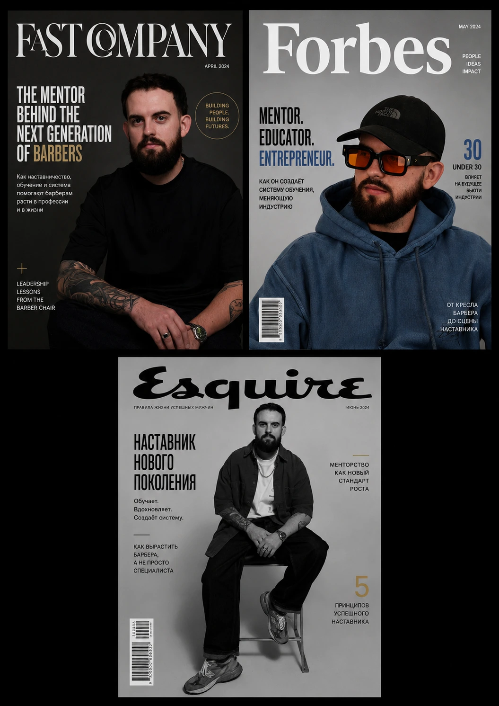

PRESS &
PUBLICATIONS
Insights, interviews, and editorial features sharing the experience, principles, and systems behind the brand.



Insights, interviews, and editorial features sharing the experience, principles, and systems behind the brand.
